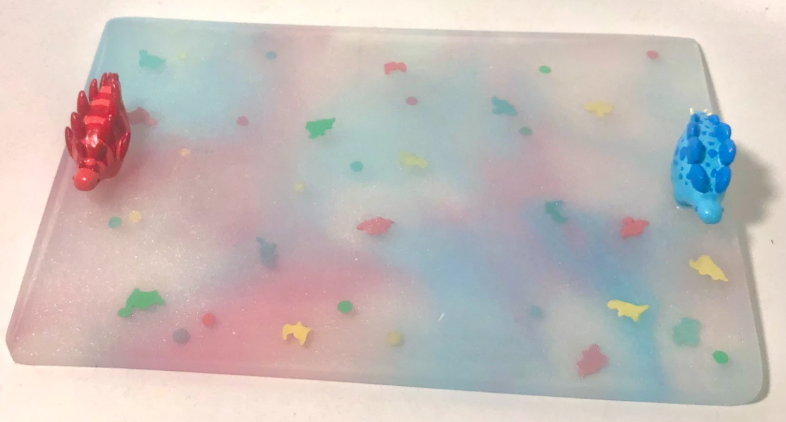
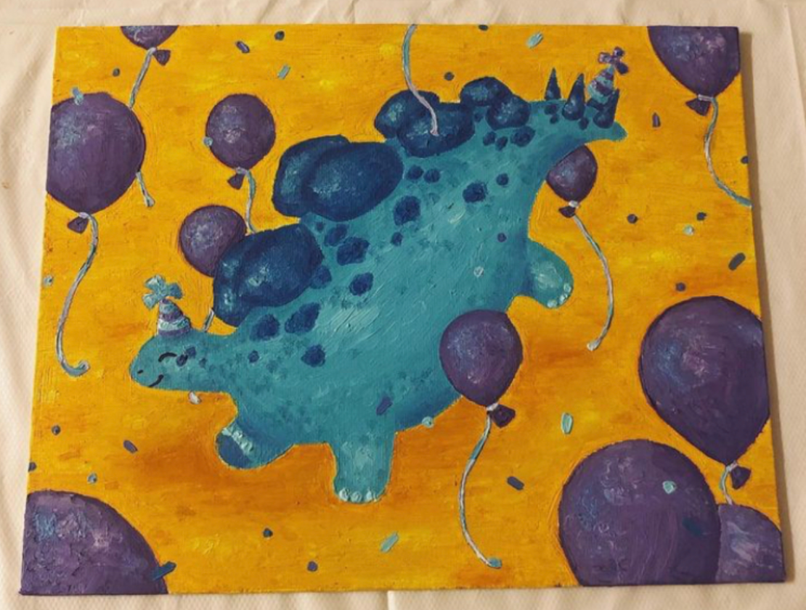

party-animals.png
oct 2023 - dec 2023 <
Party Animals is a collection of works themed around dinosaurs. Each piece features a unique medium, palette, and art style. Works were done in resin, oil paint, acrylic plastic, acrylic paint, watercolor, 3D modeling, and tattoo ink.


Party Animals was an opportunity to refine my skills in and discover new mediums. It was a challenging project, yet a rewarding one to gain experience with unique art forms such as resin and tattooing. The collection is inspired by my love for dinosaurs and the absurd idea of imagining what it would look like if they were to participate in various types of parties.
This piece, titled Dino Herd Birthday Party, is predominantly made of resin, with 3D printed handles and polymer clay confetti. The 3D printed handles were designed by me on Paint 3D, 3D printed, covered in a resin finish, painted with acrylic paint, and finally clear coated. The confetti pieces were cut out of a sheet of polymer clay and baked to later be mixed in. The resin is partially opaque to emulate the Sfumato art style, characterized by smoky and hazy looking art. I aimed to use a tetradic palette, but the resin was unpredictable and mixed slightly, creating more colors.
This piece, titled Wuerhosaurus Surprise Party, was done in oil paint and mimics expressionist paintings. These paintings are characterized by visible, broad strokes and bright vibrant colors. Lots of emotion is conveyed through these pieces, typically through movement within the piece. I chose a split complementary palette to create a lot of contrast between the background and the objects in the scene. I started the painting with a small paper sketch, then transferred it to a larger canvas, then started with dark oil colors before working my way up to lighter ones.
This piece, titled Therizinosaurus Tea Party, was inspired by the absurd hypothetical idea that a 3 story tall Therizinosaurus dinosaur could participate in an event with such delicate and small dishware. The painting was done in watercolor by first starting with a sketch, which is painted over with light colors first, then progressively darker, and finally finished with a colored pencil outline. I haven't done a watercolor piece in a long time, so I was happy to be able to refine my craft and explore using partially transparent colors and how to layer. I chose an analogous palette with lots of greens and blues to convey a calm scene. This piece mimics Impressionist pieces, which are characterized by their stretched landscapes and patchy, broad strokes.

This piece, titled Throwback Party, features two fun loving dinosaurs. The large one is a Wuerhosaurus, and the small dino perched on top of his back plates is an Archaeopteryx. I wanted to improve my 3D modeling skills and practice using constraints with palette. This piece uses a triad color palette, featuring various shades of blue, yellow, and red. I also chose to practice creating a piece in a preexisting art style, called Fauvism. This style is characterized by bright colors and a lot of round and/or well defined shapes and sections. I created this piece by using the program Paint 3D, which lets the user draw out 2D shapes and extrude them into 3D, rounded shapes. After creating the base model, the program allows for coloring directly on the model. Once that was finished, it was rendered and exported.
This piece, titled Scelidosaurus Celebration features a small Scelidosaurus with a party hat and confetti. The art is referenced from a game called Paleo Pines. The focus of this piece was to explore a new medium, tattooing on fake skin, as opposed to creating original work. This piece is a Pop Art style piece, specifically the Chibi style from Japanese pop culture. I first started by drawing my tattoo design on paper, then transferred it to stencil paper which I pressed on the fake skin. This left an outline on the skin that I could follow with the tattoo ink. I colored the lineart first, then the light green, then the dark green. Lastly, I mixed water with a light green to do the shading on the belly and back leg. Lastly, I cleaned the fake skin with vaseline and wiped the excess ink off. Since this was my first time tattooing, I decided to stick with a simple monochrome palette.
This piece, titled LAN Party, is acrylic paint on acrylic. I really wanted to experiment with doing a painting on a piece of acrylic as opposed to a normal canvas. A lot of video games feature bright colors and simple palettes, so I chose to use a complementary palette. Some of my favorite games are low-poly, and feature sectioned off geometric shapes, much like the Cubism art style featured in this piece. In order to make this piece, I first started by sketching my idea out on paper. I then measured all the dimensions of the outer edge of the box so I could create it in my 3D modeling program. I then laser cut the acrylic and placed it on top of my pencil sketch. Using the sketch as a guide, I drew the lineart with an acrylic paint pen. On the other side, I painted with acrylic paint and used the lines as a guide.